Primera temporada
La primera temporada de Los Simuladores se estrenó en 2002 en Argentina y contó con 13 episodios. La serie presenta a un grupo que se dedica a resolver diferentes problemas de personas mediante planes ingeniosos y elaboradas simulaciones. A lo largo de la temporada, se desarrollan distintos casos que combinan comedia, drama y suspenso, mostrando las estrategias utilizadas para ayudar a sus clientes.
LISTA DE CAPITULOS
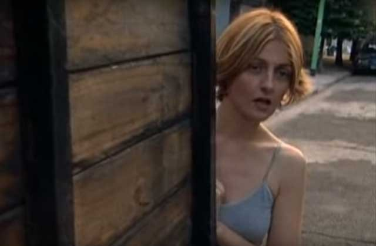
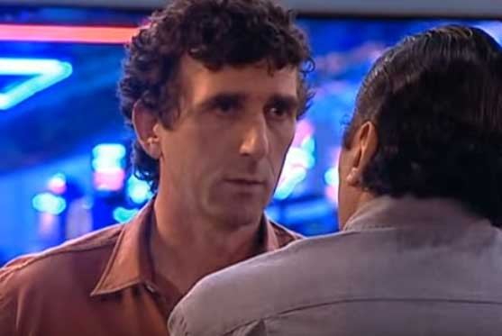
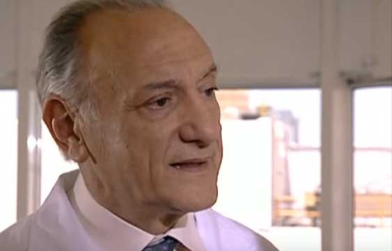
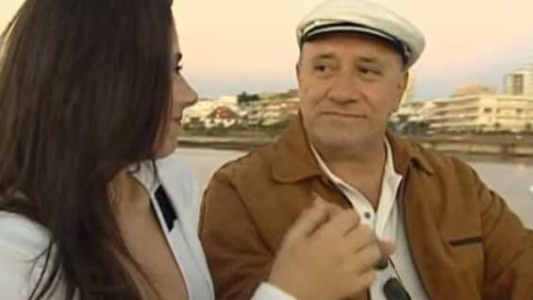
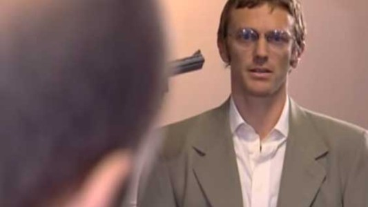
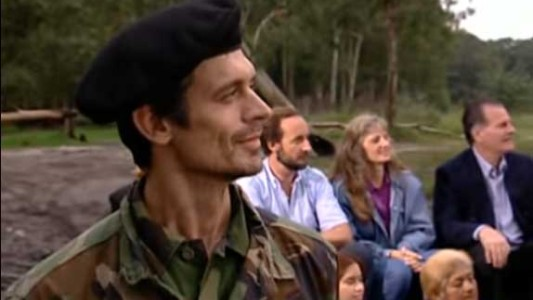
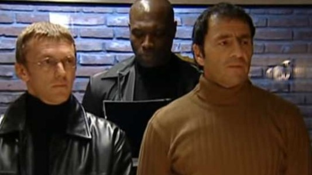
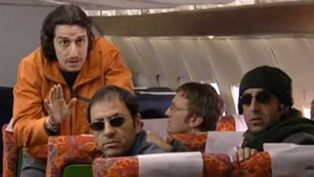
Segunda temporada
La segunda temporada de Los Simuladores se estrenó en 2003 en Argentina y contó con 11 episodios. En esta etapa, el grupo continúa resolviendo diferentes problemas mediante planes elaborados y simulaciones, enfrentándose a situaciones cada vez más complejas. La temporada mantiene la combinación de comedia, drama y suspenso que caracteriza a la serie.
LISTA DE CAPITULOS
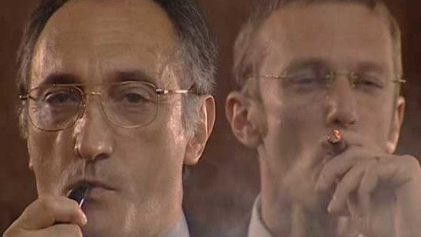
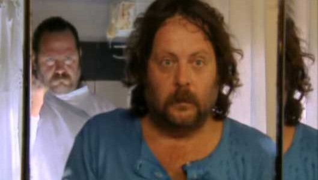
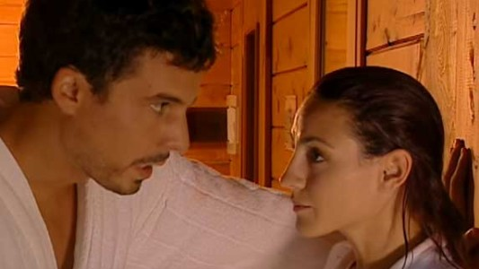
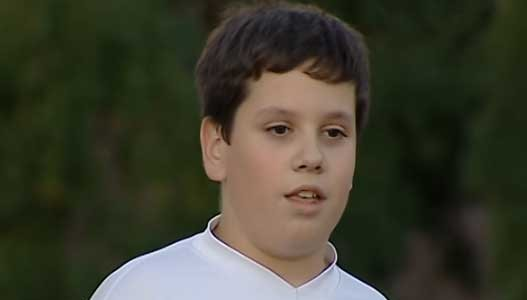
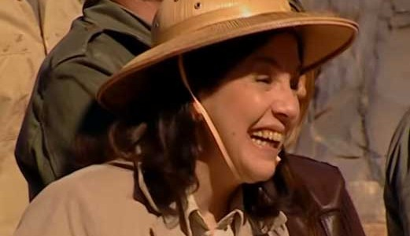
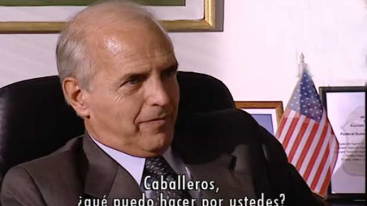
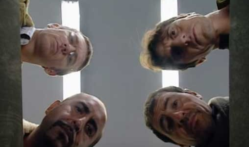
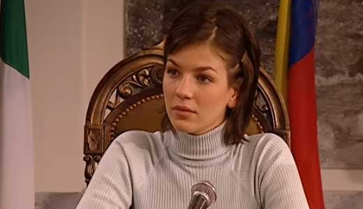
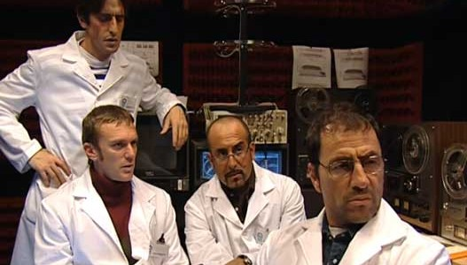
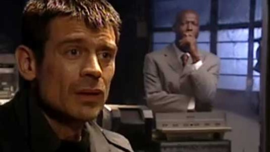
Pelicula
La adaptación cinematográfica de Los Simuladores fue anunciada oficialmente en 2022 y generó una gran expectativa entre los seguidores de la serie, que esperaban volver a ver en pantalla al equipo integrado por Mario Santos, Pablo Lamponne, Emilio Ravenna y Gabriel Medina. El proyecto tenía como principal responsable creativo a Damián Szifrón, creador de la serie original, quien también estaría a cargo de la dirección y el guion. En un principio, la película tenía previsto su estreno para 2024 y contaba con la intención de reunir nuevamente a los cuatro protagonistas: Federico D'Elía, Alejandro Fiore, Diego Peretti y Martín Seefeld. La propuesta buscaba trasladar el universo de la serie al formato cinematográfico, manteniendo la esencia de los personajes, sus estrategias y la manera particular en la que resolvían los problemas de sus clientes mediante elaborados operativos de simulación. Sin embargo, a pesar de que el guion llegó a completarse y existían planes para comenzar con el rodaje, la producción comenzó a atravesar diferentes dificultades. Entre ellas se encontraron cuestiones relacionadas con el financiamiento, la organización de la producción y la coordinación de los involucrados. Estas complicaciones provocaron sucesivas modificaciones en el calendario y el aplazamiento de la fecha de estreno, generando incertidumbre sobre el futuro del proyecto. La situación generó distintas declaraciones por parte de los involucrados. En agosto de 2024, Diego Peretti explicó que las dificultades económicas del país, la incertidumbre en el ámbito cultural y una crisis dentro de las plataformas de streaming habían afectado las posibilidades de financiación. Por su parte, Damián Szifrón aclaró que se trataba de un emprendimiento privado y que los problemas estaban relacionados principalmente con la situación financiera internacional de Paramount, empresa vinculada al desarrollo del largometraje. Finalmente, en septiembre de 2025, Federico D'Elía confirmó públicamente que la película no se llevaría adelante. El actor explicó que, aunque el elenco había firmado un contrato y estaba preparado para participar, la producción se había caído debido a decisiones empresariales y problemas económicos que excedían la voluntad de los protagonistas y del equipo creativo. De esta manera, uno de los regresos más esperados de la ficción argentina quedó sin concretarse. La noticia significó una decepción para los seguidores de la serie, especialmente porque el proyecto había alcanzado una etapa avanzada de desarrollo y contaba con el interés de sus cuatro protagonistas originales. Hasta el momento, no se anunció una nueva fecha de realización ni una alternativa concreta para llevar la historia a la pantalla grande.